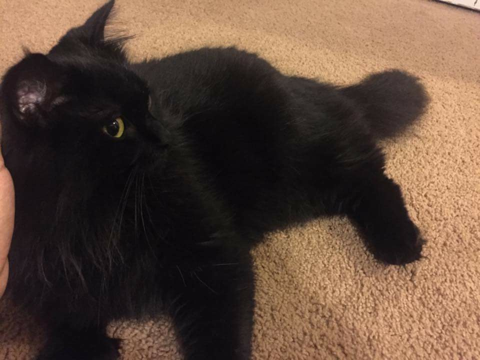
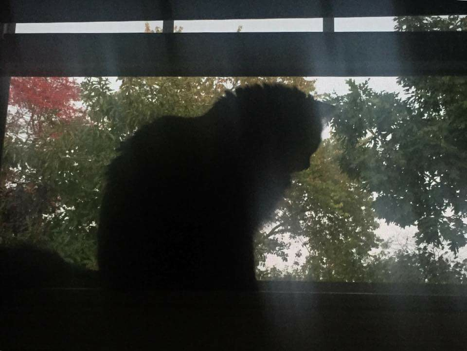
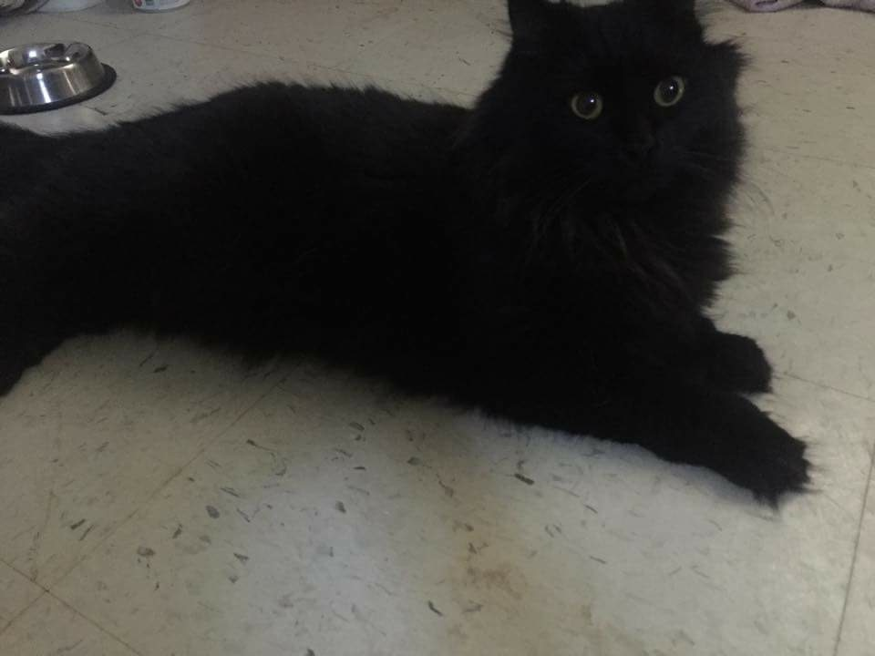

OurPets
yessirS
Home
Dogs
Cats
Submit Your Own
ye

A Legend

A Queen

A Cat
The cat shown above is my old cat Luna, she is a star! She inspired me to make this website. Thank you Luna!
Angel Gorrio | DMD 3420 Advanced Web | Networked Communities | Project 2